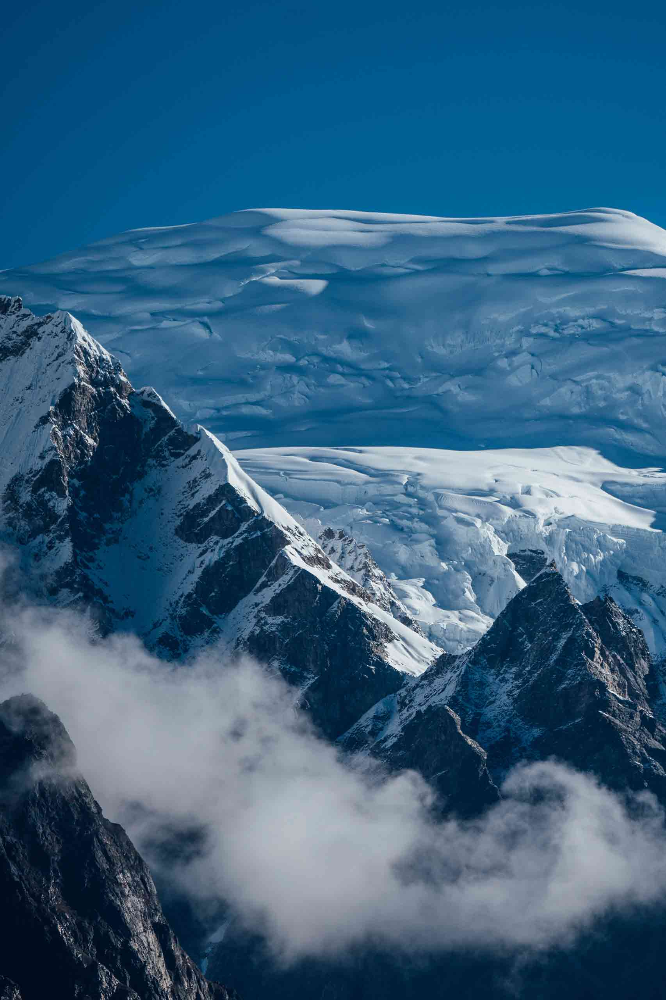
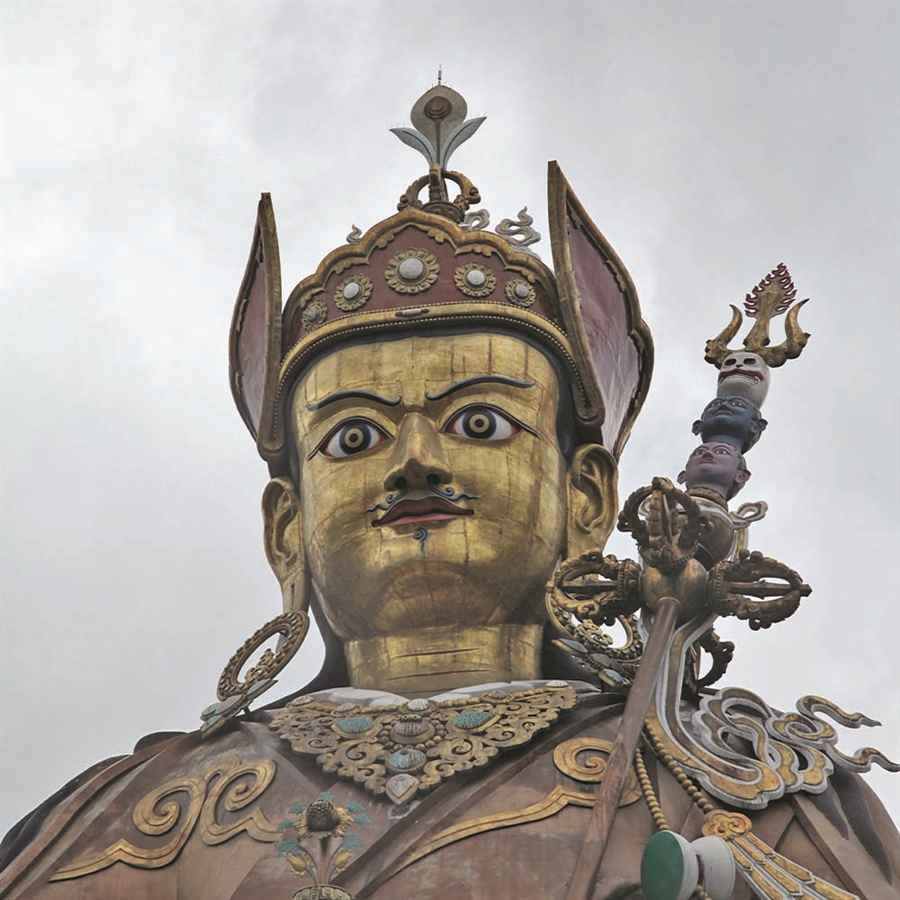

Most countries measure themselves by how much they've grown. Bhutan measures itself by how well its people are living — and has shaped everything from its tourism policy to its constitution around that one idea. The result is a kingdom that only opened to travelers in 1974, still caps how many hotel rooms and roads it builds, and has quietly stayed the way it always was while most of the world raced to look like everywhere else. Here's what that actually means for the days you'll spend here.


In 1972, Bhutan's fourth king declared that Gross National Happiness mattered more to him than Gross National Product — and rather than let that stay a quotable line, the country built it into law. Every policy decision is still weighed against four pillars: sustainable development, environmental conservation, cultural preservation and good governance. Tourism is no exception.
It's the reason there's no mass-market resort strip anywhere in Bhutan, no billboard advertising, no fast-food chain in the entire country. It's also the reason a trip here tends to feel unhurried in a way that's hard to manufacture elsewhere — the whole system is built around it, not around getting as many visitors through the door as possible. We think of it as the same principle behind every Altara itinerary: travel as transformation, not another destination checked off.


Bhutan is the only country in the world where Vajrayana Buddhism remains the living state religion — not a heritage on display, but something still practiced daily. Prayer flags mark every mountain pass, a chorten stands at nearly every village entrance, and a monk's schedule still shapes the rhythm of entire valleys the way it has for centuries.
Nowhere is that clearer than at Paro Taktsang — the Tiger's Nest Monastery, clinging to a cliff face 3,120 meters up, said to mark where Guru Rinpoche himself flew in on the back of a tigress to meditate. It's one of the most recognizable religious sites on Earth, and it's still just a place people go to pray. Time a visit around a Tshechu festival and you'll see that faith in motion — masked cham dances performed the same way they have been for hundreds of years, for a community, not a crowd.
No traffic lights, no international fast-food chains, no billboard advertising anywhere in the country. Traditional dress — the gho for men, the kira for women — is still everyday wear, not a costume for visitors, and national building codes keep new construction in the same style as the centuries-old dzongs beside it.
Every international visitor pays a Sustainable Development Fee directly to the government, funding free healthcare, education and conservation — Bhutan's deliberate trade-off for staying a place of private, guided travel rather than a mass destination. See exactly what that funds and costs on our Tariff page.
Bhutan's constitution requires at least 60% forest cover be maintained forever — today it sits above 70%. The result is a country that absorbs more carbon than it emits, the only one on Earth that can make that claim, and a landscape that still feels genuinely wild rather than managed for visitors.
Share a little about how you'd like to feel, and our team will shape a private Bhutan journey around it — no templates, no packages.